Chapter 8: EDA Industry, Open-Source Silicon, Analog, AI-in-EDA & Careers¶
The final chapter zooms out to the ecosystem around chip design: the big three EDA companies and their products, the open-source tools and open PDKs that let anyone tape out a chip, the basics of analog and mixed-signal design, and how AI agents are changing EDA in 2026. It then turns to you: how FPGAs can be a stepping stone, the Linux, Tcl and Python scripting skills every chip engineer uses, what each ASIC job role really does, a practical learning path with books, courses and websites, the interview questions you should be ready for, and how to land your first chip job.
8.1 The Big Three EDA Vendors: Synopsys, Cadence and Siemens EDA¶
Three companies supply most of the world's chip design software: Synopsys, Cadence and Siemens EDA (formerly Mentor Graphics). Each offers tools covering almost the whole flow, but each has particular strengths. Most chip companies use a mix, choosing the best tool for each step and the one their foundry certifies.
Flagship tools by flow step
| Synopsys | Cadence | Siemens EDA | |
|---|---|---|---|
| Simulation | VCS | Xcelium | Questa |
| Formal | VC Formal | Jasper | Questa Formal |
| Emulation | ZeBu | Palladium | Veloce |
| Synthesis | Design Compiler, Fusion Compiler | Genus | Catapult (HLS) |
| Place and route | Fusion Compiler, ICC2 | Innovus | Aprisa |
| Timing signoff | PrimeTime | Tempus | — |
| Extraction | StarRC | Quantus | Calibre xACT |
| Physical verification | IC Validator | Pegasus | Calibre |
| DFT and ATPG | TestMAX | Modus | Tessent |
| Custom and analog | Custom Compiler, PrimeSim | Virtuoso, Spectre | Solido, AFS |
Most chip companies mix these columns, picking the best tool for each step.
Think of it like…
The big three are like the major car makers: each sells a full range of vehicles, but drivers often have favourite models from different brands.
Real-world example
At Northgate Semi, verification runs on Xcelium and Jasper (Cadence), synthesis and P&R on Fusion Compiler (Synopsys), timing signoff on PrimeTime (Synopsys), DFT on Tessent (Siemens), and physical verification on Calibre (Siemens). The CAD team maintains scripts that pass data between all three vendors' tools using standard formats.
How it works¶
- Learn which tool each vendor offers for each flow step.
- Understand that companies mix vendors based on PPA, foundry support and price.
- Know the key product names; they appear in every job advert.
- Use university programmes to get student access to commercial tools.
- Follow vendor news: acquisitions and product renames are frequent.
Who uses it
Every ASIC engineer uses these tools; CAD engineers, EDA application engineers and EDA developers work closely with the vendors.
Key takeaway
Map one flagship product per vendor per step, e.g. synthesis: Fusion Compiler/DC vs Genus; P&R: Fusion Compiler/ICC2 vs Innovus vs Aprisa; STA: PrimeTime vs Tempus.
Going deeper
- Synopsys and Cadence each earn several billion US dollars a year; Siemens EDA sits inside Siemens Digital Industries Software after Siemens bought Mentor Graphics in 2017.
- Mixed-vendor flows work because of shared formats (Verilog, Liberty, LEF/DEF, SDC, SPEF, UPF, GDSII/OASIS) and the OpenAccess database, plus vendor interoperability programmes.
- The big vendors also sell semiconductor IP, with Synopsys and Cadence among the largest interface-IP suppliers, and hardware such as emulators and FPGA prototyping systems.
- Licences are usually time-based multi-year agreements pooled on licence servers; token schemes let teams switch between tools, and cloud options absorb short peaks.
- Foundries certify each vendor's tools for every new node; engineers check certification status and reference flows before choosing tools for advanced-node work.
- Consolidation continues: Synopsys closed its Ansys purchase in July 2025, Siemens bought Altair in 2025, and Cadence bought Hexagon's design and engineering business (MSC Nastran, Adams) in February 2026.
Common mistakes & misconceptions
- Writing just 'Cadence tools' on a CV; name the exact tools and what you did with them.
- Assuming a company uses one vendor for everything; most mix best-in-class tools step by step.
- Thinking EDA vendors sell only software; IP, emulation hardware and services are large parts of their businesses.
Key concepts, tools, formats, standards & companies¶
| Name | What it does | Example |
|---|---|---|
| Synopsys Synopsys Inc. (Sunnyvale, US; founded 1986) · Company · Whole flow · Commercial |
Largest EDA company; strong in synthesis, STA, simulation, IP, and since July 2025 Ansys simulation tools. | Design Compiler, Fusion Compiler, PrimeTime, VCS, Verdi, ZeBu and RedHawk-SC are Synopsys products. |
| Cadence Design Systems Cadence (San Jose, US; formed 1988) · Company · Whole flow · Commercial |
Major EDA vendor strong in analog/custom (Virtuoso), P&R (Innovus), verification and emulation. | Virtuoso, Spectre, Genus, Innovus, Tempus, Xcelium, Jasper and Palladium are Cadence products. |
| Siemens EDA Siemens Digital Industries Software (formerly Mentor Graphics, acquired 2017) · Company · Whole flow · Commercial |
Third major EDA vendor, leading in physical verification (Calibre) and DFT (Tessent). | Calibre, Tessent, Questa, Veloce, Catapult, Aprisa and Solido are Siemens EDA products. |
| Synopsys product map Synopsys · Resource · Whole flow · Commercial |
Key names: VCS, Verdi, VC Formal, VC SpyGlass, DC, Fusion Compiler, ICC2, PrimeTime, StarRC, ICV, TestMAX. | A job advert asking for 'PT, ICC2, StarRC' wants Synopsys back-end experience. |
| Cadence product map Cadence · Resource · Whole flow · Commercial |
Key names: Xcelium, Jasper, Verisium, Genus, Innovus, Tempus, Voltus, Quantus, Pegasus, Modus, Virtuoso. | An analog-layout job wants Virtuoso Layout Suite and Pegasus or Calibre. |
| Siemens EDA product map Siemens EDA · Resource · Whole flow · Commercial |
Key names: Questa, Questa One, Veloce CS, Catapult, Tessent, Calibre, Aprisa, Solido, Analog FastSPICE. | A DFT job advert almost always lists Tessent. |
| Synopsys acquisition of Ansys Completed 17 July 2025 · Concept · Signoff |
Synopsys bought simulation leader Ansys, adding RedHawk-SC, Totem, HFSS and multiphysics tools. | IR-drop signoff with RedHawk-SC is now a Synopsys offering. |
| EDA licences and university programmes Vendor academic programmes; Europractice for EU universities · Concept · Whole flow |
Commercial tools are licensed per seat/time; universities get them cheaply for teaching and research. | A university course uses Cadence tools provided through an academic licence. |
| Foundry certification and ecosystem programmes TSMC OIP, Samsung SAFE, Intel Foundry Accelerator, GF · Concept · Whole flow |
Foundry partner programmes certifying EDA tools, IP and design services for each node. | TSMC's Open Innovation Platform lists certified tools for N2. |
| EDA industry size Industry data (ESD Alliance / SEMI EDMD reports) · Concept · Whole flow |
EDA and IP is a relatively small but critical industry enabling a much larger chip market. | The ESD Alliance publishes quarterly EDA revenue reports. |
| EDA in the cloud Synopsys, Cadence and Siemens cloud offerings on AWS, Azure and Google Cloud · Concept · Whole flow |
Running EDA jobs on rented cloud servers, often with pay-per-use licences, to cover peaks such as signoff and regressions. | A start-up with no data centre runs its full verification regression on cloud servers using hourly licences. |
| FlexNet licence servers Flexera FlexNet Publisher (formerly FLEXlm) · Tool · Whole flow · Commercial |
Licence-management software most EDA tools use to check out licence features from a central server. | 'lmutil lmstat -a' shows all ten PrimeTime licences in use, so the CAD engineer queues the next job. |
| Silicon-to-systems consolidation Synopsys-Ansys (2025), Siemens-Altair (2025), Cadence-BETA CAE (2024) · Concept · Whole flow |
EDA vendors buying simulation and analysis companies to cover chips, packages, boards and whole systems. | Synopsys's roughly US$35 billion Ansys deal added thermal, electromagnetic and structural simulation to its chip tools. |
8.2 Other EDA and IP Players¶
Beyond the big three, many smaller companies offer specialised tools: lint and CDC, RF and high-frequency design, TCAD and device simulation, analog automation, design data management and more. China also has a fast-growing domestic EDA industry. Knowing these names helps you read job adverts and understand niche roles.
Think of it like…
If the big three are department stores, these companies are specialist boutiques that do one thing extremely well.
Real-world example
An RF front-end team designs its power amplifier in Keysight ADS, its digital control in Cadence tools, and checks CDC with Real Intent Meridian. A foundry's device team uses Synopsys Sentaurus TCAD and Silvaco tools to model new transistors. A Chinese design house adopts Empyrean tools for analog layout and flat-panel display design.
How it works¶
- Identify specialist needs: RF, TCAD, CDC, data management, analog automation.
- Evaluate niche tools for accuracy, integration and support.
- Integrate them with main-vendor flows via standard formats.
- Track acquisitions, as big vendors often buy successful specialists.
- Consider regional and open-source alternatives where appropriate.
Who uses it
CAD managers, RF/analog designers, TCAD engineers, methodology teams.
Key takeaway
Many big-three products began as start-ups (e.g. SpyGlass from Atrenta, Verdi from Novas, Jasper from Jasper Design Automation).
Going deeper
- Many big-three flagships began as start-ups: SpyGlass (Atrenta, bought by Synopsys in 2015), Jasper (Cadence, 2014), Solido (Mentor, 2017), Aprisa (Avatar, Mentor, 2020) and OneSpin (Siemens, 2021).
- Keysight grew in EDA by acquiring Cliosoft for design data management and Synopsys's optical solutions business, adding to its RF and high-speed digital tools.
- Silvaco listed on Nasdaq in 2024 and supplies TCAD, analog/custom tools and IP; TCAD is a niche career linking device physics with design.
- China's EDA vendors such as Empyrean, Primarius and X-Epic have grown quickly with government support, especially in analog, display and point tools.
- AI-native start-ups raised significant funding in 2024-2026 to build agents for RTL, verification and debug; established vendors both partner with and compete against them.
- Deals keep reshaping this list: GlobalFoundries took over Synopsys's ARC processor IP (June 2026), Arteris bought security-verification firm Cycuity (January 2026), and Siemens agreed to buy Defacto and Precision Innovations (July 2026).
Common mistakes & misconceptions
- Only applying to the big three; smaller EDA and IP firms often give broader responsibility and faster learning.
- Assuming niche tools are second-rate; many are the industry standard in their niche, such as CDC signoff or RF simulation.
- Forgetting integration cost: every extra tool needs format conversion, scripts and support in the flow.
Key concepts, tools, formats, standards & companies¶
| Name | What it does | Example |
|---|---|---|
| Keysight EDA Keysight Technologies · Company · Whole flow · Commercial |
RF, microwave and high-speed design tools (PathWave ADS) and design data management (Cliosoft). | A 5G power amplifier is designed and simulated in Keysight ADS. |
| Silvaco Silvaco Group · Company · Fabrication · Commercial |
TCAD, analog/custom design and SPICE tools, plus IP. | A university models a new power transistor in Silvaco TCAD. |
| Synopsys Sentaurus TCAD Synopsys · Tool · Fabrication · Commercial |
Technology CAD for simulating semiconductor processes and device physics. | Foundry engineers simulate nanosheet doping profiles in Sentaurus. |
| Real Intent Real Intent Inc. · Company · Verification · Commercial |
Static sign-off specialist for lint, CDC, RDC and DFT checks. | A team runs Real Intent Meridian CDC as its CDC sign-off tool. |
| Arteris Arteris Inc. · Company · RTL Design · Commercial |
NoC interconnect IP and SoC integration automation (IP-XACT, register management). | An automotive SoC uses Arteris NoC IP and Magillem integration tools. |
| Empyrean and other Chinese EDA vendors Empyrean Technology, Primarius, X-Epic and others · Company · Whole flow · Commercial |
Growing domestic Chinese EDA companies covering analog, flat-panel, verification and some digital tools. | Chinese design houses increasingly adopt domestic tools for selected flow steps. |
| Aldec Aldec Inc. · Company · Verification · Commercial |
Simulation, FPGA verification and hardware-assisted verification, popular in safety-critical work. | An avionics team uses Aldec tools for DO-254 FPGA verification. |
| Precision Innovations Precision Innovations (Siemens agreed to acquire it, July 2026) · Company · Physical Design |
Company developing and commercially supporting OpenROAD-based tools; Siemens agreed in July 2026 to buy it for AI-driven chip planning. | Start-ups paid it for OpenROAD support; its planning technology is set to join Siemens's digital design portfolio. |
| AI-EDA start-ups (e.g. ChipAgents) Various venture-funded start-ups · Company · Whole flow |
New companies building AI agents for RTL generation, verification and debug. | A DV team pilots an AI agent that writes and debugs UVM tests. |
| Verific Design Automation Verific (US) · Company · RTL Design · Commercial |
Supplies SystemVerilog, VHDL and UPF parser libraries that many EDA tools embed as their language front end. | Several lint, formal and emulation tools from different vendors read RTL through Verific's parsers. |
| MathWorks (MATLAB, Simulink, HDL Coder) MathWorks · Company · Spec/Architecture · Commercial |
Algorithm-modelling tools used by architects; HDL Coder generates RTL from Simulink or MATLAB models. | A 5G modem team models its filters in MATLAB, then generates fixed-point RTL with HDL Coder. |
| Agnisys Agnisys Inc. · Company · RTL Design · Commercial |
Specification automation: generates register RTL, UVM register models, C headers and documents from one register description. | A team describes 2,000 registers once and generates RTL, UVM register models and firmware headers automatically. |
| Breker Verification Systems Breker · Company · Verification · Commercial |
Test-suite synthesis tools based on Accellera's Portable Stimulus Standard (PSS) for SoC-level scenarios. | A Breker-generated test drives coherent cache traffic from several CPUs at once on an emulator. |
8.3 Open-Source EDA: Yosys, OpenROAD, LibreLane, Magic, KLayout, Verilator¶
A complete open-source chip design flow now exists: Verilator and Icarus for simulation, Yosys for synthesis, OpenROAD for place and route, OpenSTA for timing, Magic, KLayout and Netgen for physical verification, all orchestrated by flows like LibreLane and OpenROAD-flow-scripts. They are free, scriptable and perfect for learning, research and small tapeouts.
Think of it like…
Open-source EDA is like a community kitchen with good, free equipment: you might not cook a 10-course banquet there, but you can learn every technique and serve real meals.
Real-world example
Priya, a second-year student, installs LibreLane with Nix, takes a small SPI peripheral, and in one evening goes from Verilog to GDS on SKY130. She opens the layout in KLayout, checks timing with OpenSTA, and reads OpenROAD logs to understand placement and CTS. Six months later her design is on a Tiny Tapeout chip and in her CV.
How it works¶
- Install tools (package managers, Nix, Docker or the OSS CAD Suite builds).
- Simulate and lint with Icarus/Verilator; test with cocotb.
- Run a flow (LibreLane or ORFS) on an open PDK.
- Inspect results: timing, congestion, layout in KLayout or the OpenROAD GUI.
- Submit to a shuttle (Tiny Tapeout, wafer.space, ChipFoundry, IHP).
Who uses it
Students, researchers, hobbyists, start-ups prototyping, and companies contributing to open tools.
Key takeaway
Open-source tools teach the same concepts as commercial ones; put an open-source tapeout project on GitHub to stand out.
Going deeper
- Licences are mostly permissive or weak copyleft, such as ISC (Yosys), BSD (OpenROAD, OpenRAM), Apache 2.0 (LibreLane), GPL (KLayout) and LGPL/Artistic (Verilator), so companies can use them commercially.
- Open flows reach tapeout quality on 130-180 nm open PDKs; at advanced nodes commercial tools dominate because foundry certification and PDK access require NDAs.
- Installation options include Nix (LibreLane's recommended route), Docker images such as IIC-OSIC-TOOLS and pre-built OSS CAD Suite archives; always pin versions for reproducibility.
- Communities meet at FOSSi events (ORConf, Latch-Up), on GitHub and in chat servers; maintainers usually welcome newcomers who file clear, minimal bug reports.
- Industry uses open tools too: Verilator for fast simulation, KLayout as a GDS viewer and scripting engine, and Yosys inside formal and FPGA flows.
Common mistakes & misconceptions
- Following old OpenLane 1 tutorials without checking; LibreLane commands and configuration keys differ in places.
- Leaving PDK and tool versions unpinned, so a design that passed last month fails today.
- Expecting commercial-grade PPA at advanced nodes from open tools; use them to learn concepts, then map to commercial tools.
Try it: Run a LibreLane flow on an example design¶
# after installing LibreLane (see librelane.readthedocs.io)
librelane --pdk sky130A config.json
# then open the result
klayout runs/<run_tag>/final/gds/<design>.gds
Key concepts, tools, formats, standards & companies¶
| Name | What it does | Example |
|---|---|---|
| Yosys YosysHQ (started by Claire Wolf; ISC licence) · Tool · Synthesis · Open source |
Permissively licensed synthesis framework at the heart of open hardware; its scriptable passes are reused by many other projects. | YosysHQ funds development partly by selling Tabby CAD Suite, a commercial Yosys build adding SystemVerilog, SVA and VHDL support. |
| OpenROAD OpenROAD project, led by UC San Diego (Andrew Kahng); BSD licence · Tool · Physical Design · Open source |
Launched in 2018 under DARPA's IDEA programme to build a 24-hour, no-human-in-the-loop RTL-to-GDS flow. | Its reference flow, OpenROAD-flow-scripts, supports several open PDKs; Precision Innovations, which Siemens agreed to buy in 2026, offers commercial support. |
| LibreLane FOSSi Foundation (Apache 2.0 licence) · Tool · Physical Design · Open source |
Community continuation of OpenLane 2, adopted after Efabless closed in 2025; orchestrates Yosys, OpenROAD, Magic, KLayout and Netgen. | Original OpenLane configurations still run in LibreLane's Classic flow, so older tutorials remain useful with small changes. |
| Magic Open Circuit Design (Tim Edwards); originated at UC Berkeley in the 1980s · Tool · Signoff · Open source |
Veteran VLSI layout tool revived for open PDKs; still a key DRC and extraction engine in SKY130 and GF180MCU flows. | open_pdks generates Magic technology files so LibreLane can run Magic DRC and SPICE extraction automatically. |
| KLayout Matthias Köfferlein (GPL licence) · Tool · Signoff · Open source |
Community-favourite layout viewer and editor with Ruby and Python scripting, also available as a Python package. | 'pip install klayout' lets a script read a GDS, count shapes per layer and run checks without the GUI. |
| Verilator Wilson Snyder and contributors; CHIPS Alliance project (LGPL/Artistic licence) · Tool · Verification · Open source |
Conceived at Digital Equipment Corporation in 1994; now among the most active open EDA projects, with companies contributing features. | Companies sponsor Verilator improvements because it powers their fast nightly regressions. |
| OSS CAD Suite YosysHQ · Tool · Whole flow · Open source |
Pre-built bundle of open-source hardware tools (Yosys, nextpnr, Verilator, Icarus, SBY, GTKWave). | Download one archive and get a working toolchain on Linux, macOS or Windows. |
| FOSSi Foundation Free and Open Source Silicon Foundation · Organisation · Whole flow |
Non-profit supporting open-source silicon projects and events (ORConf, Latch-Up). | FOSSi hosts LibreLane and cocotb. |
| CHIPS Alliance Linux Foundation project · Organisation · Whole flow |
Industry consortium hosting open-source hardware projects such as Chisel, Verible and Caliptra. | Caliptra, an open-source root-of-trust IP, is developed under CHIPS Alliance. |
| OpenRAM UC Santa Cruz and Oklahoma State University (BSD licence) · Tool · Physical Design · Open source |
Open-source SRAM compiler generating memory layouts, netlists and timing views for open PDKs. | A student SoC on SKY130 uses OpenRAM to generate a 1 KB SRAM macro. |
| IIC-OSIC-TOOLS Institute for Integrated Circuits, JKU Linz · Resource · Whole flow · Open source |
Ready-made Docker container bundling dozens of open analog and digital chip-design tools plus open PDKs. | A university class gives every student the same container, avoiding days of tool installation. |
| Nix and reproducible installs Nix package manager (recommended by LibreLane) · Concept · Whole flow |
Declarative packaging that pins exact tool versions so a flow produces the same results on every machine. | Entering LibreLane's Nix environment gives every team member identical tool builds. |
| Contributing to open EDA GitHub issues and pull requests · Concept · Whole flow |
Reporting bugs, improving documentation or fixing code in open tools: visible, reviewable proof of skill. | A student's merged Yosys bug fix becomes a talking point in her first CAD interview. |
8.4 Open PDKs and Shuttles: SKY130, GF180MCU, IHP and Tiny Tapeout¶
Open PDKs remove the NDA barrier so anyone can design a real chip, and shuttle programmes make fabrication affordable. After Efabless shut down in early 2025, the ecosystem regrouped: Tiny Tapeout continued with IHP and GF180 runs, ChipFoundry (founded by former Efabless leaders) restarted SKY130 shuttles, and wafer.space launched low-cost GF180MCU runs.
Think of it like…
Open PDKs and shuttles are like community recording studios: once only big labels could afford to record an album; now anyone can book a slot.
Real-world example
A university club designs four student projects. Two go on a Tiny Tapeout shuttle for under a few hundred dollars each. One analog project uses IHP SG13G2 because it needs SiGe bipolar transistors. A start-up member puts a larger mixed-signal prototype on a wafer.space GF180MCU run, receiving about 1,000 chips per slot, enough for a small product trial.
How it works¶
- Pick a PDK matching your needs: SKY130 (130 nm), GF180MCU (180 nm), IHP SG13G2 (130 nm BiCMOS).
- Choose a shuttle: Tiny Tapeout (small tiles), ChipFoundry, wafer.space, IHP or university programmes.
- Use the shuttle's template and flow, and pass its precheck.
- Submit before the deadline; wait several months for chips.
- Test on the demo board and share results openly.
Who uses it
Students, educators, researchers, hobbyists and early-stage start-ups.
Key takeaway
Shuttle schedules change; always check the provider's website for current runs, prices and supported PDKs.
Going deeper
- SKY130 offers a local-interconnect layer plus five metal layers and devices from 1.8 V upward; GF180MCU offers 3.3-6 V devices; IHP SG13G2 adds SiGe HBTs with fT around 350 GHz.
- Caravel, the SKY130 harness, gives each project a user area of about 10 mm² with 38 GPIOs, a Wishbone bus and logic-analyser probes driven by a RISC-V management core.
- Tiny Tapeout projects start from a GitHub template; a GitHub Action runs the flow, and on the chip a multiplexer connects one selected tile at a time to the shared pins.
- Expect six to nine months or more from submission to chips; shuttle dates can slip, as the 2025 Efabless closure showed.
- Costs range from tens or hundreds of dollars for Tiny Tapeout tiles to thousands for a full shuttle slot, far below the cost of a private mask set.
Common mistakes & misconceptions
- Treating shuttle dates as guaranteed; build slack into course or project schedules.
- Skipping gate-level simulation or ignoring precheck warnings; there is no second chance once the chip is fabricated.
- Thinking an open PDK means relaxed rules; DRC, LVS and antenna checks are just as strict.
Key concepts, tools, formats, standards & companies¶
| Name | What it does | Example |
|---|---|---|
| SkyWater SKY130 SkyWater Technology (IonQ subsidiary since July 2026) and Google · Standard · Fabrication · Open source |
The first open, manufacturable PDK, released in 2020 for a 130 nm CMOS process. | Google-sponsored open MPW shuttles on SKY130 made hundreds of open chips. |
| GF180MCU GlobalFoundries and Google · Standard · Fabrication · Open source |
Open 180 nm PDK good for mixed-signal and higher voltage designs. | wafer.space's first GF180MCU run confirmed working tapeouts. |
| IHP SG13G2 IHP Microelectronics (Germany) · Standard · Fabrication · Open source |
Open 130 nm SiGe BiCMOS PDK with fast bipolar transistors for RF and mmWave research. | Students design a 60 GHz amplifier test structure on SG13G2. |
| Tiny Tapeout shuttles Tiny Tapeout (Matt Venn and team) · Resource · Whole flow |
Shuttle multiplexing hundreds of roughly 160 × 100 µm tiles, each with 8 inputs, 8 outputs and 8 bidirectional pins, onto one chip. | Shuttles run on SKY130, IHP and GF180 processes, some with analog slots; chips arrive about 6-9 months after the deadline. |
| Efabless (closed 2025) Efabless Corporation (shut down March 2025) · Company · Whole flow |
Former open-silicon platform behind chipIgnite, the Caravel harness and OpenLane; closed for lack of funding. | Its closure delayed some Tiny Tapeout runs and led to the LibreLane fork. |
| ChipFoundry ChipFoundry.io (founded by former Efabless leaders) · Company · Fabrication |
Runs SKY130 MPW shuttles, continuing chipIgnite-style tapeouts after Efabless. | ChipFoundry's shuttles go ahead only when enough slots are filled. |
| wafer.space wafer.space (Tim Ansell, Singapore) · Company · Fabrication |
Low-cost wafer-sharing service on GF180MCU, giving each project about 1,000 chips. | A slot costs a few thousand dollars and delivers enough chips for a product pilot. |
| Caravel harness Efabless (open source) · IP · RTL Design · Open source |
Open SoC template with a RISC-V management core and user area for SKY130 shuttles. | Designers place their project inside Caravel's 10 mm² user area. |
| Google open MPW programme Google with SkyWater and Efabless (2020-2023) · Resource · Fabrication |
Free sponsored shuttles that kick-started the open-source silicon movement. | Student teams worldwide got free chips through Google's open MPW runs. |
| Zero to ASIC Course Matt Venn · Resource · Whole flow |
Online course teaching the open-source ASIC flow with a real tapeout. | Students finish the course with a design on a Tiny Tapeout chip. |
| Shuttle precheck Shuttle providers (Tiny Tapeout, ChipFoundry, wafer.space) · Concept · Signoff |
Automated checks (DRC, LVS, density, pin and size rules) that every design must pass before joining a shuttle. | Tiny Tapeout's GitHub Action runs the flow and precheck, showing a green tick when the tile is ready. |
| Open hardware licences CERN-OHL v2 (S, W, P), Solderpad, Apache 2.0 · Concept · Whole flow |
Licences written for hardware designs, from strongly reciprocal (CERN-OHL-S) to permissive (CERN-OHL-P, Solderpad). | A team releases its RISC-V core under Solderpad so companies can reuse it in commercial chips. |
| Tiny Tapeout demo board Tiny Tapeout · Hardware · Packaging & Test |
Board carrying the shuttle chip plus a microcontroller that selects a design, sets its clock and drives its inputs. | A student selects her tile from a Python console on the board and watches her counter drive the LEDs. |
8.5 〰️ Analog and Mixed-Signal Basics¶
Not everything on a chip is digital. Analog circuits handle continuous signals: amplifiers, data converters (ADCs/DACs), PLLs, voltage regulators, sensors and radio front-ends. Mixed-signal chips combine analog and digital blocks. Analog design is done mostly by hand at the transistor level, with careful simulation and layout, and it is a highly valued skill.
Think of it like…
Digital is like a light switch (on/off); analog is like a dimmer that can be set anywhere, which makes it more flexible but much more sensitive to noise and variation.
Real-world example
A fitness-tracker chip contains a heart-rate sensor front-end amplifier, a 16-bit ADC, a Bluetooth radio, a PLL, a DC-DC converter and an LDO, plus digital logic and a CPU. Analog designer Hana draws the ADC schematic in Virtuoso, simulates it with Spectre across 45 corners and Monte Carlo runs, then works closely with a layout engineer to match transistors and avoid noise coupling from the digital logic.
How it works¶
- Specify performance: gain, bandwidth, noise, linearity, power, area.
- Design schematics and size transistors using hand analysis and simulation.
- Simulate across corners, temperature and Monte Carlo variation.
- Create careful layout: matching, symmetry, guard rings, shielding.
- Post-layout simulation with parasitics; mixed-signal verification with digital.
Who uses it
Analog designers, RF designers, mixed-signal verification engineers, analog layout engineers.
Key takeaway
Analog skills are scarce and well paid; Razavi's textbook is the standard starting point.
Going deeper
- In saturation a MOSFET's current is roughly ½·µCox·(W/L)·(Vgs − Vth)²; at advanced nodes designers prefer the gm/Id method with simulated lookup tables.
- kT/C noise equals √(kT/C), about 64 µV rms for 1 pF at 300 K, so higher resolution needs larger capacitors and therefore more power.
- ADC architectures trade speed for resolution: flash (fastest), pipeline, SAR (efficient mid-range) and sigma-delta (highest resolution, lower bandwidth); ENOB = (SINAD − 1.76)/6.02.
- Analog scales poorly: lower supply voltages shrink signal headroom and short transistors have low intrinsic gain, so analog often stays on older nodes or becomes digitally assisted.
- Many PLLs at advanced nodes are all-digital (ADPLL), using a time-to-digital converter and a digitally controlled oscillator instead of a charge pump.
- Mixed-signal chips isolate noisy digital logic from sensitive analog using separate supplies, guard rings, deep N-wells and careful floorplanning.
Common mistakes & misconceptions
- Simulating only the typical corner; analog circuits must work across process, voltage, temperature and mismatch.
- Treating analog blocks as ideal in SoC verification; real-number models must include power-up, enables and calibration.
- Ignoring layout: parasitics, mismatch and substrate coupling can ruin a schematic that simulated perfectly.
Key concepts, tools, formats, standards & companies¶
| Name | What it does | Example |
|---|---|---|
| Op-amp / OTA Analog building block · Concept · RTL Design |
Amplifiers that boost voltage differences; the workhorse of analog circuits. | A two-stage OTA buffers a reference voltage for an ADC. |
| ADC and DAC Data converters · Concept · RTL Design |
Convert analog signals to digital numbers (ADC) and back (DAC). | A 12-bit SAR ADC samples a temperature sensor 1 million times per second. |
| PLL building blocks (PFD, charge pump, VCO) Analog/mixed-signal circuit design · Concept · RTL Design |
Feedback loop of phase detector, charge pump, loop filter, VCO and divider; loop bandwidth trades jitter against lock time. | An analog designer sizes the loop filter so a 2.4 GHz PLL locks within 20 µs while meeting its jitter budget. |
| LDO and DC-DC converters Power-management building blocks · Concept · RTL Design |
Regulators that provide stable supply voltages from a battery or main supply. | An on-chip LDO supplies a clean 0.9 V to a sensitive analog block. |
| Bandgap reference Analog building block · Concept · RTL Design |
Circuit producing a stable reference voltage independent of temperature and supply. | A 1.2 V bandgap feeds the ADC and regulators. |
| SerDes Mixed-signal building block · Concept · RTL Design |
Serialiser/deserialiser transmitting very high-speed serial data with equalisation and clock recovery. | A 112G PAM4 SerDes uses DSP-based receivers to recover the data. |
| SerDes equalisers and clock-data recovery (FFE, CTLE, DFE, CDR) Mixed-signal building blocks inside every SerDes PHY · Concept · RTL design |
Transmit FFE plus receive CTLE and DFE undo channel loss, while clock-data recovery extracts timing from the data stream itself. | During link training a 112G receiver adapts its CTLE peaking and DFE taps until the pre-FEC error rate meets the standard's target. |
| Monte Carlo simulation Analog verification · Methodology · Verification |
Running many simulations with random device variation to estimate yield. | 1,000 Monte Carlo runs show the comparator offset stays under 5 mV. |
| Matching and analog layout Analog layout practice · Methodology · Physical Design |
Layout techniques (common-centroid, interdigitation, dummies) to make devices identical. | Input transistors of a differential pair are laid out common-centroid. |
| Mixed-signal verification (AMS, real-number modelling) Verilog-AMS, SystemVerilog real-number models (wreal) · Methodology · Verification |
Verifying analog and digital together using co-simulation or simplified real-number models. | An ADC is modelled with SystemVerilog real numbers in the SoC UVM testbench. |
| BCD and RF processes Foundry specialty processes · Process · Fabrication |
Processes optimised for power management (Bipolar-CMOS-DMOS) or radio frequencies. | A motor-driver IC uses a 130 nm BCD process with 40 V transistors. |
| Current mirror Analog building block · Concept · RTL Design |
Transistor pair copying a reference current into other branches; used to bias almost every analog circuit. | A 10 µA reference current is mirrored to bias amplifiers across the chip. |
| Differential pair Analog building block · Concept · RTL Design |
Two matched transistors amplifying the difference between their inputs while rejecting noise common to both. | An op-amp's input stage is a differential pair, rejecting supply noise that hits both inputs equally. |
| Noise (thermal, flicker, kT/C) Analog fundamentals · Concept · RTL Design |
Random device signals that set the smallest detectable signal; kT/C noise limits how small sampling capacitors can be. | A 1 pF sampling capacitor adds about 64 µV rms of kT/C noise at room temperature. |
| Data-converter metrics (ENOB, SNR, INL/DNL) IEEE 1241 and industry practice · Concept · RTL Design |
Numbers describing converter quality: effective number of bits, signal-to-noise ratio and static linearity errors. | A '12-bit' ADC with 68 dB SINAD has an ENOB of about 11 bits. |
8.6 Analog Design Tools: Virtuoso, Spectre, HSPICE, ngspice, Xschem¶
Analog designers draw schematics, simulate them with SPICE-class simulators, and lay out transistors by hand or with assistance. Cadence Virtuoso is the dominant commercial environment, with Spectre for simulation. Synopsys offers Custom Compiler and PrimeSim (including HSPICE), and Siemens offers Solido and Analog FastSPICE. Open-source options include Xschem, ngspice, Xyce, Magic and KLayout.
Think of it like…
Analog tools are like an artist's studio: a sketchpad (schematic), a physics lab (simulator) and a precision drawing table (layout editor).
Real-world example
In industry, Raj designs an LDO in Virtuoso Schematic Editor, runs Spectre across corners with the ADE Assembler, and checks variation with Solido. On an open-source project, his student cousin draws the same LDO in Xschem using the IHP PDK, simulates with ngspice, and lays it out in KLayout with PDK PCells.
How it works¶
- Draw the schematic with PDK symbols.
- Set up testbenches and simulate (DC, AC, transient, noise) across corners.
- Run statistical and variation analysis.
- Draw layout; run DRC, LVS and extraction.
- Re-simulate with parasitics and iterate.
Who uses it
Analog, RF and mixed-signal designers; analog layout engineers; CAD support.
Key takeaway
Virtuoso is the most requested analog tool in job adverts; Xschem plus ngspice is the best free way to practise.
Going deeper
- SPICE simulators solve circuit equations accurately but slowly; FastSPICE tools partition and simplify circuits to handle memories and full-chip analog at some accuracy cost.
- Virtuoso stores designs in the OpenAccess database and is automated with the SKILL language; most commercial PDK PCells are written in SKILL.
- RF and PLL design adds periodic steady-state (PSS) and periodic noise (PNoise) analyses to the usual DC, AC, transient and noise simulations.
- SRAM and other heavily replicated cells need high-sigma verification, around 6 sigma; tools such as Solido use statistical methods instead of billions of brute-force Monte Carlo runs.
- The open analog stack (Xschem, ngspice or Xyce, Magic or KLayout, Netgen) is bundled in containers such as IIC-OSIC-TOOLS for SKY130, GF180MCU and IHP PDKs.
Common mistakes & misconceptions
- Trusting results without checking simulator accuracy settings, convergence and time steps.
- Stopping at schematic simulation; post-layout simulation with extracted parasitics is mandatory.
- Using the wrong model library section or corner set from the PDK, which invalidates every result.
Try it: Run an ngspice simulation in batch mode¶
ngspice -b inverter.cir -o inverter.log
Key concepts, tools, formats, standards & companies¶
| Name | What it does | Example |
|---|---|---|
| Cadence Virtuoso Studio Cadence Design Systems · Tool · Physical Design · Commercial |
Industry-standard custom/analog design environment for schematics, simulation setup and layout. | Most analog IP in the industry is drawn in Virtuoso. |
| Cadence Spectre (Spectre X, Spectre FX) Cadence Design Systems · Tool · Verification · Commercial |
SPICE-class circuit simulators; X for accurate large circuits, FX for FastSPICE speed. | Spectre X simulates a full PLL with parasitics overnight. |
| Synopsys PrimeSim (HSPICE, XA) Synopsys · Tool · Verification · Commercial |
Synopsys circuit simulation family including the long-standing golden HSPICE simulator. | Library characterisation and foundry model validation often use HSPICE. |
| Synopsys Custom Compiler Synopsys · Tool · Physical Design · Commercial |
Synopsys custom design environment for schematics and layout. | A memory team draws bit-cell arrays in Custom Compiler. |
| Siemens Solido and Analog FastSPICE Siemens EDA · Tool · Verification · Commercial |
Variation-aware design tools (Solido) and fast, accurate circuit simulation (AFS). | Solido verifies SRAM yield to high sigma with far fewer simulations than brute force. |
| ngspice ngspice open-source project · Tool · Verification · Open source |
Open-source mixed-level SPICE simulator, standard in open PDK flows. | SKY130 and IHP PDKs ship ngspice-compatible models. |
| Xyce Sandia National Laboratories · Tool · Verification · Open source |
Open-source, parallel SPICE-compatible simulator for large circuits. | Xyce simulates a large extracted analog block on many CPU cores. |
| Xschem Stefan Schippers · Tool · Spec/Architecture · Open source |
Open-source schematic capture tool that netlists for ngspice and Xyce. | Open-source analog designers draw schematics in Xschem with SKY130 symbols. |
| Keysight ADS Keysight Technologies · Tool · Verification · Commercial |
RF and microwave design and electromagnetic simulation environment. | A mmWave front-end is designed in ADS with EM-simulated inductors. |
| Analog layout automation Cadence Virtuoso automated layout, Synopsys, open-source ALIGN/MAGICAL · Tool · Physical Design |
Tools that automate parts of analog layout using constraints, templates and AI. | Automated placement generates a matched differential pair in minutes. |
| Cadence ADE (Explorer, Assembler, Verifier) Cadence Design Systems · Tool · Verification · Commercial |
Virtuoso's simulation environment for setting up testbenches, corners and Monte Carlo runs and checking results against specs. | ADE Assembler runs 45 corners overnight and flags the two that miss the gain specification. |
| Electromagnetic (EM) simulators Cadence EMX, Synopsys (Ansys) HFSS and RaptorX, Keysight Momentum · Tool · Verification · Commercial |
Field solvers modelling inductors, transformers and high-frequency interconnect that ordinary extraction cannot capture. | A 28 GHz inductor is simulated in EMX and the resulting model is used in Spectre. |
| gm/Id design methodology Analog practice (e.g. Jespers and Murmann's textbook) · Methodology · RTL Design |
Sizing transistors from lookup tables of simulated transconductance efficiency instead of square-law hand equations. | A Python script reads gm/Id tables from ngspice sweeps and sizes an OTA in minutes. |
8.7 AI in EDA: From Design-Space Optimisation to Agentic Flows¶
AI is now part of everyday chip design. Since about 2020, machine-learning tools have tuned P&R settings and prioritised verification runs. Since 2023, generative AI assistants answer tool questions and draft scripts and RTL. In 2025-2026, the big three launched 'agentic' AI: systems that plan and execute multi-step tasks like writing RTL, building testbenches, running regressions and debugging, with human engineers supervising.

Think of it like…
First AI was a smart calculator for tuning knobs, then a helpful assistant you could ask questions, and now it is becoming a junior engineer you assign tasks to and review.
Real-world example
A verification team at a GPU company pilots an agentic flow: the agent reads the spec section for a new FIFO, writes the RTL and a cocotb/UVM testbench, runs simulation, finds a failing assertion and proposes a fix. The engineer reviews every change. Separately, the PD team's Cerebrus runs explore 200 settings combinations and cut power by 7 %. AI saves time, but humans remain responsible for signoff.
How it works¶
- Optimisation AI: reinforcement learning explores tool settings for better PPA (DSO.ai, Cerebrus).
- Analytics AI: prioritises regressions, predicts congestion, clusters failures.
- Generative AI copilots: answer questions, write scripts, RTL and assertions.
- Agentic AI: multi-step agents run tools, read logs and iterate under human supervision.
- Humans review outputs, especially for correctness, security and IP ownership.
Who uses it
All design engineers increasingly use AI tools; CAD teams integrate them; AI/ML engineers in EDA companies build them.
Key takeaway
Be ready to discuss AI in interviews: what it is good at (exploration, triage, boilerplate) and why verification and human signoff still matter.
Going deeper
- Optimisation AI such as DSO.ai and Cerebrus uses reinforcement learning or similar search over tool settings, launching many parallel runs; gains are real but cost compute and licences.
- LLMs often produce RTL that compiles but is functionally wrong; agentic flows ground them by running real simulators, formal tools and linters and feeding results back.
- Companies deploy AI on private infrastructure or under strict contracts, because RTL and PDK data are confidential and may be export-controlled.
- Signoff stays deterministic: STA, DRC/LVS and equivalence checking remain the final judges, whatever generated the design.
- Independent studies questioned how well Google's reinforcement-learning macro placement generalises, a reminder to compare AI claims against strong baselines.
- Skills that make engineers effective with AI: precise specifications, verification thinking, scripting and the judgement to spot a plausible but wrong answer.
Common mistakes & misconceptions
- Trusting AI-written RTL or scripts because they compile; verify them functionally and review them like a junior colleague's code.
- Pasting proprietary RTL or PDK data into public AI tools, breaching NDAs and possibly export rules.
- Assuming AI removes the need for fundamentals; you cannot review what you do not understand.
Key concepts, tools, formats, standards & companies¶
| Name | What it does | Example |
|---|---|---|
| Synopsys.ai (DSO.ai, VSO.ai, TSO.ai) Synopsys · Tool · Whole flow · Commercial |
Synopsys AI suite: design-space optimisation, verification-space optimisation and test-space optimisation. | DSO.ai searches P&R settings automatically to improve PPA. |
| Synopsys AgentEngineer Synopsys (announced 2025; general availability planned end of 2026) · Tool · Whole flow · Commercial |
Synopsys agentic AI technology for multi-step engineering workflows on its Autopilot platform. | An agent runs a verification task end to end and reports results for engineer review. |
| Cadence Cerebrus and Cerebrus AI Studio Cadence Design Systems · Tool · Physical Design · Commercial |
ML-driven implementation optimisation; AI Studio adds agentic multi-block orchestration. | Cerebrus AI Studio coordinates optimisation runs across many SoC blocks. |
| Cadence JedAI and Verisium Cadence Design Systems · Tool · Verification · Commercial |
JedAI is Cadence's data and AI platform; Verisium applies AI to verification and debug. | Verisium automatically triages regression failures to likely root causes. |
| Cadence ChipStack AI Super Agent Cadence Design Systems (launched February 2026) · Tool · Verification · Commercial |
Agentic system that generates RTL, test plans and testbenches, runs regressions and proposes fixes. | ChipStack drives Xcelium and Jasper to verify a block from its specification. |
| Siemens Fuse EDA AI and Questa One Agentic Toolkit Siemens EDA (2026) · Tool · Verification · Commercial |
Siemens's agentic AI framework and domain-specific verification agents. | The Questa One toolkit generates and debugs testbenches with the Fuse agent. |
| LLM-generated RTL Research and industry trend · Concept · RTL Design |
Using large language models to write HDL from natural-language specs, needing careful verification. | Benchmarks like VerilogEval measure how often LLM-generated Verilog passes tests. |
| AlphaChip and ML placement research Google DeepMind (published 2021), academic research · Concept · Physical Design |
Reinforcement-learning approaches to macro placement, used on Google TPUs. | Google reported using AlphaChip for TPU floorplans; the method sparked academic debate. |
| Responsible AI use in design Company policy · Concept · Whole flow |
Rules on confidentiality, IP, review and verification of AI-generated content. | A company forbids pasting proprietary RTL into public chatbots. |
| AI agent General AI term · Concept · Whole flow |
An LLM-based system that plans steps, calls tools, reads their outputs and iterates toward a goal. | An agent runs lint, reads 40 warnings, edits the RTL and reruns lint until clean, then asks an engineer to review. |
| EDA copilots Synopsys.ai Copilot (2023); Cadence and Siemens assistants · Tool · Whole flow · Commercial |
Chat assistants built into EDA tools that answer questions, explain reports and draft scripts. | A PD engineer asks the copilot for a Tcl script reporting the ten worst setup paths. |
| LLM hardware benchmarks VerilogEval (NVIDIA), RTLLM and other academic benchmarks · Resource · RTL Design |
Test sets measuring how often AI-generated HDL compiles and passes functional tests. | Papers report pass@1 scores: the fraction of problems a model solves correctly on its first attempt. |
| ML prediction models in tools Built into commercial P&R, STA and verification tools · Concept · Physical Design |
Models trained on earlier runs that predict congestion, timing or failing tests early to save runtime. | A placer's ML model predicts routing hot spots before global routing, so cells are spread out early. |
8.8 FPGAs as a Stepping Stone¶
FPGAs let you turn your RTL into working hardware on your desk in minutes, for the price of a development board. They are the best way for students to practise RTL design, debugging and timing closure on real hardware. Many ASIC engineers started on FPGAs, and FPGA prototyping is also used inside ASIC projects.
FPGA vs ASIC at a glance
| FPGA | ASIC | |
|---|---|---|
| Logic | LUTs and fixed routing | Standard cells, custom wiring |
| Up-front cost | A board, from about $100 | NRE, often millions |
| Unit cost at volume | Higher | Much lower |
| Turnaround | Minutes to hours | Months per tapeout |
| Typical clock | About 100-500 MHz | Up to several GHz |
| Power and area | Higher | Lowest for the function |
| Clocking style | Global clock nets, clock enables | CTS, clock gating |
| Best for | Prototypes, low volume, updates | High volume, best PPA |
The RTL skills transfer directly; the economics and physical details differ.
Think of it like…
An FPGA board is like a flight simulator you can take home: not a real airliner, but you learn to fly properly before getting your licence.
Real-world example
Tom buys an entry-level FPGA board. He writes a UART, a VGA controller and finally a small RISC-V CPU in SystemVerilog, synthesises them in Vivado, and debugs with the integrated logic analyser. Timing reports teach him about critical paths. In his ASIC interview, he explains how he pipelined his CPU to reach 100 MHz, and the interviewer is impressed by the hands-on experience.
How it works¶
- Buy a beginner board (AMD/Xilinx Artix, Altera Cyclone, Lattice iCE40/ECP5).
- Install the vendor tool (Vivado, Quartus Prime, Radiant) or open-source Yosys + nextpnr.
- Build projects: LEDs, UART, VGA/HDMI, SPI, a small CPU.
- Simulate first, then synthesise, place and route, and program the board.
- Use timing reports and on-chip logic analysers to debug and close timing.
Who uses it
Students, hobbyists, FPGA engineers, ASIC prototyping engineers.
Key takeaway
Remember the differences: FPGAs use LUTs and fixed routing, so ASIC-style gated clocks and latches are discouraged on FPGAs.
Going deeper
- FPGA fabric groups LUTs, carry chains and flip-flops into slices (AMD) or ALMs (Altera), surrounded by block RAM, DSP blocks, clock managers and high-speed transceivers.
- A Vivado Tcl flow mirrors ASIC steps: synth_design, opt_design, place_design, route_design, report_timing_summary and finally write_bitstream.
- FPGA timing closure teaches real STA skills: reading setup and hold slack, adding pipeline stages and writing clock and I/O constraints in SDC syntax.
- Open toolchains built on Yosys and nextpnr support Lattice iCE40 and ECP5 and Gowin parts; Project X-Ray documents AMD 7-series bitstreams for experimental open flows.
- Adaptive SoCs such as AMD Zynq, Altera Agilex SoC and Microchip PolarFire SoC combine hard processors with FPGA fabric, ideal for hardware-software projects.
Common mistakes & misconceptions
- Debugging only on the board without simulating first; waveform simulation finds most bugs far faster.
- Carrying FPGA-only habits, such as initial register values or vendor primitives, into ASIC RTL where they do not work.
- Ignoring timing warnings because the design seems to work on one board at room temperature.
Try it: Open-source FPGA build for a Lattice iCE40 board¶
yosys -p "synth_ice40 -top top -json top.json" top.v
nextpnr-ice40 --up5k --package sg48 --json top.json --pcf pins.pcf --asc top.asc
icepack top.asc top.bin
iceprog top.bin
Key concepts, tools, formats, standards & companies¶
| Name | What it does | Example |
|---|---|---|
| AMD Vivado Design Suite AMD (formerly Xilinx) · Tool · Synthesis · Commercial |
Design suite for AMD FPGAs and adaptive SoCs; a free edition supports smaller devices. | Students use Vivado's free edition with Artix-7 boards. |
| Altera Quartus Prime Altera (independent again after Intel sold a majority stake to Silver Lake in 2025) · Tool · Synthesis · Commercial |
Design software for Altera FPGAs, with a free Lite edition. | A university lab uses Quartus Prime Lite with Cyclone-based DE10 boards. |
| Lattice Radiant / Diamond Lattice Semiconductor · Tool · Synthesis · Commercial |
Design tools for Lattice's small, low-power FPGAs. | A sensor-fusion design runs on a Lattice CrossLink-NX FPGA. |
| Microchip Libero SoC Microchip Technology · Tool · Synthesis · Commercial |
Design suite for PolarFire and other Microchip FPGAs, including RISC-V SoC FPGAs. | A space-grade design uses a radiation-tolerant PolarFire FPGA. |
| nextpnr and open FPGA toolchains YosysHQ and community (Project IceStorm, Trellis, Apicula) · Tool · Physical Design · Open source |
Open-source place-and-route for iCE40, ECP5, Gowin and other FPGAs. | A hobbyist builds an iCE40 design entirely with open-source tools. |
| LUT (Look-Up Table) FPGA architecture · Concept · Synthesis |
Small memory implementing any logic function of a few inputs; the basic FPGA logic element. | A 6-input LUT can implement any 6-input Boolean function. |
| Integrated logic analyser (ILA / SignalTap) AMD ILA; Altera SignalTap · Tool · Verification |
On-chip debug cores that capture internal FPGA signals for viewing on a PC. | An ILA captures the UART FSM state when a byte is lost. |
| FPGA vs ASIC design differences Design practice · Concept · Whole flow |
FPGA designs avoid gated clocks and latches and rely on vendor primitives; ASICs give full control. | An FPGA design uses clock-enable flops where an ASIC would use clock gating. |
| FPGA vendors AMD (Xilinx), Altera, Lattice, Microchip, Efinix, Gowin · Company · Whole flow |
Companies making FPGAs, from huge data-centre devices to tiny low-power parts. | Students often start with AMD Artix-7 or Lattice iCE40 boards because their tools are free. |
| Beginner FPGA boards Digilent Basys 3 and Arty, Terasic DE10-Lite, iCEBreaker, Sipeed Tang Nano, ULX3S · Hardware · Whole flow |
Low-cost boards with switches, LEDs, displays and connectors for learning digital design. | A Basys 3 board lets a student build a stopwatch on seven-segment displays in a weekend. |
| Block RAM and DSP blocks FPGA architecture (e.g. AMD 36 Kb BRAM and DSP48; Altera M20K) · Concept · Synthesis |
Hard memory and multiply-accumulate blocks inside FPGAs that synthesis infers from suitable RTL. | A FIR filter's multipliers map to DSP blocks and its sample buffer to block RAM. |
| XDC / SDC constraints AMD XDC (SDC-based); Altera SDC · File format · Synthesis |
FPGA timing and pin constraint files that use the same SDC commands as ASIC flows. | 'create_clock -period 10 [get_ports clk]' defines a 100 MHz clock exactly as in ASIC SDC. |
| Bitstream FPGA vendor tools · File format · Physical Design |
Configuration file that programs an FPGA's LUTs, routing and blocks after place and route. | Vivado's write_bitstream command produces a .bit file that is loaded into the board over USB-JTAG. |
8.9 Scripting, Linux and Flow Automation for Chip Engineers¶
Chip engineers spend much of their day at a Linux command line, driving tools with scripts rather than buttons. Tcl controls almost every EDA tool, Python glues flows together and analyses results, Make and flow managers run hundreds of steps in the right order on a compute farm, and version control keeps every change traceable. Fluency in these skills is expected in every front-end and back-end job.
Think of it like…
EDA tools are the kitchen appliances; scripts are the recipes and timers that run them in order, so dinner for a thousand guests comes out the same every night.
Real-world example
Each night at Northgate Semi, a CI job pulls the latest RTL, and a Makefile launches synthesis, four P&R experiments and STA on the compute farm through the job scheduler. Tcl scripts inside each tool apply constraints and write reports; a Python script parses the timing reports, compares worst slack with yesterday and posts a chart. When a run fails, the engineer searches the log for the first ERROR line instead of reading 200,000 lines.
How it works¶
- Learn the Linux shell: files, pipes, grep, sed, awk, find, environment variables and job control.
- Learn Tcl the way EDA tools use it: variables, lists, loops, procedures and object collections.
- Use Python to parse logs and reports, plot trends and connect tools together.
- Run flows reproducibly with Make or a flow manager, a job scheduler and pinned tool versions.
- Keep RTL, constraints and scripts under version control and review every change.
- Automate quick checks on every commit so broken changes are caught within hours.
Who uses it
Every chip engineer; CAD and flow engineers make it their speciality, and DV, PD, STA and DFT job adverts routinely list Tcl, Python and Linux.
Key takeaway
Interviews often include writing a Tcl loop over design objects or a one-line grep/awk command to pull worst slack from a report, so practise both.
Going deeper
- Tcl spread through EDA in the 1990s; SDC, UPF and most tool shells are Tcl, so set, foreach, proc, lsort and regexp appear in constraint files as well as flow scripts.
- Collections are not Tcl lists: commands like get_cells return handles that must be walked with foreach_in_collection or converted with get_object_name; mixing the two is a classic beginner bug.
- Python's role keeps growing: cocotb testbenches, OpenROAD and KLayout APIs, report parsers and AI-assisted flow tools are Python, while Tcl remains the language inside each tool.
- Compute farms schedule licences as well as servers; jobs queue when licences run out, so efficient scripts release licences promptly and checkpoint long runs.
- Reproducibility means pinning tool versions (modules, containers or Nix), recording seeds and versions in every run log, and tagging the exact commit used for tapeout.
- Shell essentials worth drilling: pipes and redirection, find, grep -r, sed -i, awk field printing, xargs, tail -f on a running log, and ssh with tmux for long remote sessions.
Common mistakes & misconceptions
- Parsing reports with fragile regular expressions; formats change between tool versions, so prefer tool query commands or APIs where possible.
- Hard-coding paths and tool versions inside scripts; use variables and environment modules so flows move between projects.
- Keeping personal scripts outside version control; an untracked tweak that fixed timing cannot be reproduced at the next ECO.
Try it: PrimeTime-style Tcl: print the endpoints and slack of the five worst setup paths¶
foreach_in_collection p [get_timing_paths -max_paths 5 -delay_type max] {
set ep [get_object_name [get_attribute $p endpoint]]
set slack [get_attribute $p slack]
puts [format "%-40s %8.3f" $ep $slack]
}
# Shell: show the first error in a long log, with its line number
# grep -n -m1 "ERROR" synth.log
Key concepts, tools, formats, standards & companies¶
| Name | What it does | Example |
|---|---|---|
| Linux shell for EDA work Bash and tcsh on enterprise Linux (RHEL, Rocky Linux and similar) · Concept · Whole flow |
The command-line environment where EDA tools run; many companies still keep csh/tcsh setup scripts alongside bash. | A new engineer sources the project setup script, which sets tool paths, licence servers and project variables. |
| grep, sed and awk Standard Unix text-processing utilities · Tool · Whole flow · Open source |
Commands for searching logs, editing files in place and extracting columns from reports, often chained with pipes. | grep -c VIOLATED timing.rpt counts failing paths in a large report in under a second. |
| Tcl for EDA scripting Tcl Core Team (created by John Ousterhout, 1988) · Language · Whole flow |
The scripting language embedded in nearly every EDA tool shell; SDC and UPF are Tcl-based, so procs, lists and loops appear everywhere. | A PD engineer writes a Tcl proc that adds the same placement blockages to every block in a hierarchical design. |
| Object collections in EDA tools Synopsys-style get_cells, get_nets, foreach_in_collection (also in other tools) · Concept · Whole flow |
Tool-internal handles to design objects that you filter and query by attribute instead of parsing printed text. | sizeof_collection [get_cells -hier -filter "is_sequential == true"] counts every sequential cell in the design. |
| Python for EDA automation Python Software Foundation; tool APIs (OpenROAD, KLayout, cocotb) · Language · Whole flow |
The main glue and analysis language: parsing reports, generating files, driving cocotb tests and plotting quality-of-results trends. | A Python script reads 40 runs' timing and power reports into a table and highlights the best floorplan. |
| Perl in legacy flows Larry Wall (1987); open source · Language · Whole flow |
Text-processing language still found in many older company flows and generators; reading it is useful, writing new Perl is rare. | A new hire maintains a 15-year-old Perl script that converts a register spreadsheet into RTL. |
| GNU Make GNU Project · Tool · Whole flow · Open source |
Build tool that runs steps in dependency order and skips steps whose inputs have not changed since the last run. | After a floorplan change, make route reruns placement and routing but reuses synthesis because the netlist is unchanged. |
| Flow managers and reference flows Synopsys Lynx; Cadence Stylus flow kits; LibreLane; OpenROAD-flow-scripts · Tool · Whole flow |
Frameworks defining each flow step with its inputs, outputs and settings, so every block is built the same way. | The CAD team's flow manager runs identical steps on 30 blocks, so results can be compared fairly. |
| SiliconCompiler Zero ASIC (open source) · Tool · Whole flow · Open source |
Python-based open-source build system that drives open or commercial tools through one API and records a provenance manifest for each run. | A start-up describes its design in a short Python script and runs the same flow on two different PDKs. |
| Compute-farm job schedulers IBM Spectrum LSF; Slurm; Altair Grid Engine (now part of Siemens) · Tool · Whole flow |
Systems that queue thousands of tool runs onto shared servers and licences; bsub (LSF) or sbatch (Slurm) submits a job. | A regression of 5,000 tests is submitted as one job array and finishes overnight across 400 cores. |
| Environment modules Environment Modules; Lmod · Tool · Whole flow |
Commands such as module load that set paths and licence variables for a chosen tool version, so engineers switch versions cleanly. | module load innovus/23.1 selects the approved version for the project, matching what signoff used. |
| Code editors for HDL and scripts Vim, GNU Emacs (verilog-mode), VS Code with HDL extensions · Tool · Whole flow |
Editors with HDL syntax support, linting and auto-completion; Vim and Emacs dominate on remote servers, VS Code with remote extensions is spreading. | Emacs verilog-mode auto-generates a module's port connections, saving an RTL designer from typing 200 signal names by hand. |
| Remote work tools (ssh, tmux, VNC) OpenSSH, tmux and remote-desktop software · Tool · Whole flow |
Tools for working on remote compute servers: ssh for shells, tmux to keep sessions alive, and remote desktops for GUIs. | A PD engineer starts a ten-hour route inside tmux, disconnects, and reattaches from home to check progress. |
| Regular expressions POSIX and Perl-compatible (PCRE) syntax; Python re · Concept · Whole flow |
Patterns that match text, used in grep, sed, Tcl regexp, Python and tool filters to find names and values. | The pattern u_core/.*_reg matches every register inside u_core when writing a filter or a waiver. |
8.10 Careers in ASIC Design: Who Does What¶
Chip design offers many distinct careers. Front-end roles include architects, RTL designers and design verification engineers. Back-end roles include synthesis, physical design, STA, physical verification and DFT engineers. Supporting roles include CAD/flow engineers, analog designers, post-silicon validation, product and test engineers, and application engineers at EDA and IP companies.
Think of it like…
A chip team is like a film crew: writers, directors, camera operators, editors and sound engineers each master their craft, and the film needs all of them.
Real-world example
At a 300-person chip company: 15 architects, 60 RTL designers, 100 verification engineers, 50 physical design and STA engineers, 15 DFT engineers, 20 CAD engineers, 15 analog designers and 25 validation/product engineers. A new graduate joins as a DV engineer, moves into formal verification after two years, and later becomes a verification lead.
How it works¶
- Learn the fundamentals (digital logic, CMOS, computer architecture, HDLs).
- Choose a direction: front end (RTL/DV), back end (PD/STA/DFT), analog, or CAD.
- Build hands-on projects in that direction with open-source or student tools.
- Apply for internships and graduate roles; network at conferences and meetups.
- Grow into senior, lead, architect or management roles over time.
Who uses it
Semiconductor companies, hyperscalers, EDA vendors, IP companies, foundries, OSATs, start-ups and design-service firms hire these roles.
Key takeaway
Design verification is the largest entry-level hiring area; physical design and DFT are often in high demand too.
Going deeper
- Typical entry requirements are a bachelor's or master's in electrical or computer engineering; a master's is common for design roles and a PhD for research, architecture and EDA algorithms.
- Most companies run parallel ladders: technical (senior, staff, principal, distinguished engineer, fellow) and management (lead, manager, director).
- Every role scripts: Linux shell, Python and Tcl are near-universal; DV adds SystemVerilog and UVM, PD adds Tcl-heavy tool flows, and CAD adds software engineering and compute farms such as LSF or Slurm.
- Moves between roles are common: DV to formal or architecture, RTL to architecture, PD to STA or CAD, test to product engineering, and almost any role to application engineering.
- Hardware security (security verification, side-channel and fault-injection analysis) and AI-hardware design are fast-growing specialisations in 2026.
Common mistakes & misconceptions
- Believing your first role is permanent; many senior engineers have worked in two or three disciplines.
- Assuming back-end roles need little coding; PD, STA and CAD engineers script all day.
- Neglecting communication: specs, reviews and cross-team debugging are central in every chip role.
Key concepts, tools, formats, standards & companies¶
| Name | What it does | Example |
|---|---|---|
| Chip / SoC architect Senior engineering role · Role · Spec/Architecture |
Defines what the chip does and how: blocks, performance targets, power budgets and trade-offs. | An architect models cache sizes and chooses the NoC topology for an AI chip. |
| RTL design engineer Front-end role · Role · RTL Design |
Writes and owns synthesizable RTL for blocks, working through lint, CDC, synthesis and timing feedback. | An RTL engineer designs a DMA controller from its microarchitecture spec. |
| Design verification (DV) engineer Front-end role · Role · Verification |
Builds testbenches, writes tests, closes coverage and finds bugs before tapeout. | A DV engineer builds a UVM environment and finds 80 bugs in a PCIe block. |
| Formal verification engineer Front-end specialist role · Role · Verification |
Uses formal tools to prove properties, often on control logic, security and arithmetic. | A formal engineer proves an arbiter starvation-free with Jasper. |
| Physical design (PD) engineer Back-end role · Role · Physical Design |
Implements blocks from netlist to GDS: floorplan, place, CTS, route and timing closure. | A PD engineer closes timing on a 2 GHz CPU block in Innovus. |
| STA / timing signoff engineer Back-end specialist role · Role · Signoff |
Owns constraints and signoff timing across all corners and modes, driving ECOs. | An STA engineer validates SDC and signs off 48 timing scenarios. |
| DFT engineer Back-end/test role · Role · DFT |
Inserts scan, compression, MBIST and JTAG, generates ATPG patterns and supports silicon test. | A DFT engineer reaches 99 % stuck-at coverage with Tessent. |
| Physical verification engineer Back-end specialist role · Role · Signoff |
Runs and debugs DRC, LVS, ERC and DFM checks to get the layout tapeout-clean. | A PV engineer fixes 2,000 DRC errors in the final week before tapeout. |
| CAD / flow / methodology engineer Infrastructure role · Role · Whole flow |
Builds and maintains tool flows, scripts, compute infrastructure and automation for design teams. | A CAD engineer writes Python and Tcl to automate nightly P&R runs. |
| Analog / mixed-signal designer Analog role · Role · RTL Design |
Designs transistor-level circuits such as ADCs, PLLs, regulators and SerDes. | An analog designer creates a low-noise amplifier for a medical sensor chip. |
| Post-silicon validation / product / test engineer Post-silicon roles · Role · Packaging & Test |
Bring up, validate, characterise, test and ramp chips into production. | A product engineer analyses yield data and adjusts test limits. |
| Field / application engineer (FAE/AE) Customer-facing role at EDA, IP and chip companies · Role · Whole flow |
Helps customers use tools, IP or chips; combines technical depth with communication. | An EDA AE helps a start-up set up its first Fusion Compiler flow. |
| EDA software (R&D) engineer EDA vendors and open-source projects · Role · Whole flow |
Develops the algorithms and software inside EDA tools, such as placement, timing or simulation, usually in C++ and Python. | An R&D engineer at an EDA company speeds up a router's detailed-routing engine by 20 %. |
| Package / SI-PI engineer Chip companies, OSATs and systems companies · Role · Packaging & Test |
Designs package substrates and analyses signal integrity, power integrity and heat across chip, package and board. | An SI engineer simulates a 112G SerDes channel from die bump through package to connector. |
8.11 Your Learning Path: From Zero to Job-Ready¶
A realistic path takes you from digital logic basics to a portfolio of hands-on projects. Start with digital logic and Verilog, add computer architecture and CMOS basics, then specialise: verification, RTL, physical design, DFT or analog. Free tools and open PDKs mean you can do real projects, even a real tapeout, before your first job.
Think of it like…
It is like learning a musical instrument: scales first (logic), then simple songs (small RTL), then pieces in a band (SoC projects), and finally performing on stage (a tapeout).
Real-world example
Months 1-3: Harris & Harris textbook and all HDLBits problems. Months 4-6: Verilator/cocotb testbenches; a UART and SPI on an FPGA. Months 7-9: SystemVerilog and UVM via online courses; a small RISC-V core. Months 10-12: Yosys and LibreLane flow on SKY130; Tiny Tapeout submission; learn SDC and read STA reports. Throughout: publish projects on GitHub and write short blog posts.
How it works¶
- Foundations: number systems, Boolean logic, combinational/sequential circuits, FSMs.
- HDL: Verilog/SystemVerilog, simulation, testbenches, waveforms.
- Architecture and CMOS: pipelines, caches, buses; transistors, timing, power.
- Specialise: UVM/formal (DV), synthesis/STA/PD, DFT, or analog.
- Build a portfolio: FPGA projects, open-source contributions, a tapeout; then apply.
Who uses it
Students, graduates, self-learners and engineers switching from software or other hardware fields.
Key takeaway
Employers value evidence: a GitHub repo with clean RTL, a self-checking testbench and a completed flow is worth more than a list of courses.
Going deeper
- Specialisation paths: DV (SystemVerilog OOP, UVM, SVA, coverage, cocotb), PD (SDC, STA, OpenROAD or LibreLane, Tcl), DFT (scan, ATPG, MBIST theory) and analog (Razavi, Xschem, ngspice, Magic).
- Free verification learning sites such as Verification Academy and ChipVerify, covered in the verification chapter, pair well with EDA Playground for hands-on UVM practice.
- A strong portfolio repository has a README with block diagram and spec, self-checking tests with coverage, CI, synthesis or timing results and waveform screenshots.
- At about ten hours a week the twelve-month plan is realistic; consistency matters more than intensity, and finishing projects matters more than starting many.
- Practise interview skills while learning: write RTL on paper, explain timing paths aloud and critically review your own older code.
Common mistakes & misconceptions
- Tutorial hopping without finishing projects; employers want evidence of completed, tested work.
- Building designs without testing them; an untested CPU is not a portfolio piece.
- Learning tool buttons instead of concepts; tools change, but fundamentals do not.
Key concepts, tools, formats, standards & companies¶
| Name | What it does | Example |
|---|---|---|
| HDLBits Henry Wong (University of Toronto) · Resource · RTL Design |
Interactive Verilog exercises from basic gates to FSMs with automatic checking. | A student solves 170+ problems and gains confidence for RTL coding tests. |
| ZipCPU blog Dan Gisselquist (Gisselquist Technology) · Resource · Verification |
In-depth free articles on Verilog design, formal verification with SymbiYosys and FPGA projects. | Readers learn to formally verify a FIFO following a ZipCPU tutorial. |
| VLSI System Design (VSD) Kunal Ghosh (VSD Corp.) · Resource · Physical Design |
Online courses and workshops on open-source physical design, STA and RISC-V. | Learners complete a VSD workshop running OpenLane/LibreLane on SKY130. |
| EDA Playground Doulos · Tool · Verification |
Free browser-based environment to run Verilog, SystemVerilog, VHDL and UVM simulations. | A student runs a UVM example online without installing anything. |
| University courses (MIT, Berkeley, Stanford, NPTEL, Coursera) MIT OCW, UC Berkeley EECS 151, NPTEL (India), Coursera · Resource · Whole flow |
Free or low-cost lecture material on digital design, VLSI and CAD algorithms. | Berkeley EECS 151 materials cover RTL to ASIC flow with labs. |
| GitHub portfolio Career practice · Concept · Whole flow |
Public repositories showing RTL, testbenches, flows and documentation. | A repo with a RISC-V core, cocotb tests and a GDS screenshot impresses interviewers. |
| Communities (FOSSi chat, Reddit r/chipdesign, r/FPGA, Discord servers) Online communities · Resource · Whole flow |
Places to ask questions, share projects and learn from practitioners. | The Tiny Tapeout Discord helps beginners debug their first designs. |
| Linux, Git and scripting Core engineering skills · Concept · Whole flow |
Command line, version control and Python or Tcl scripting: the daily environment of every chip engineer (see the scripting topic). | A student automates running 50 testbenches with a Python script and tracks every change in Git. |
| Read production-quality open RTL lowRISC Ibex and OpenTitan, OpenHW CVA6, PULP projects · Methodology · RTL Design |
Studying real, verified open-source designs to learn coding style, structure and verification practice. | Reading Ibex's decoder and its testbench teaches more about professional style than many tutorials. |
| IEEE 1800 SystemVerilog LRM IEEE 1800-2023, free through the IEEE GET Program · Resource · RTL Design |
The official SystemVerilog language reference manual; the final word when tutorials disagree. | Unsure about a race between blocking assignments, a DV engineer checks the LRM's scheduling chapter. |
| Project ladder Career practice · Concept · Whole flow |
Projects of growing difficulty: counter, UART, FIFO, SPI, cache, pipelined RISC-V core, then a tapeout. | Each finished rung adds a repository with a README, tests and results to the portfolio. |
| Write about what you build Career practice · Concept · Whole flow |
Short blog posts or READMEs explaining design choices and bugs found, showing employers your communication skills. | A post on debugging an asynchronous FIFO gets shared online and leads to an interview invitation. |
8.12 Essential Books, Conferences and News Sources¶
A handful of textbooks cover most of what an ASIC engineer needs to know, and a few conferences and news sites keep you current. Read one book per area deeply rather than skimming many. Follow industry news to understand companies, nodes and tools, which helps in interviews and career choices.
Think of it like…
Books are your foundation and toolbox; conferences and news are your window onto what the industry is building right now.
Real-world example
Laila keeps four books on her desk: Harris & Harris for digital design, Weste & Harris for CMOS VLSI, Spear & Tumbush for SystemVerilog verification, and Bhasker & Chadha for STA. She reads SemiWiki and Semiconductor Engineering weekly, watches DAC and DVCon talks online, and attends a local FOSSi meetup. In interviews she can discuss both fundamentals and current trends.
How it works¶
- Pick one core book per area and work through its examples.
- Supplement with free papers (Cummings, DVCon proceedings).
- Follow news sites and newsletters weekly.
- Watch conference talks (DAC, DVCon, ISSCC, Hot Chips, ORConf, Latch-Up).
- Keep notes and summaries; teach others to cement learning.
Who uses it
Students, self-learners and working engineers keeping up to date.
Key takeaway
Know the classic books by author name; interviewers often ask what you have read, and recognising 'Weste & Harris' signals seriousness.
Going deeper
- Read actively: retype and simulate the book's RTL, solve end-of-chapter problems and discuss answers with a study partner instead of reading cover to cover.
- Much conference material is free or cheap: DVCon papers, Hot Chips slides and videos, and ISSCC and VLSI Symposium short courses are excellent learning resources.
- Key events by area: DAC and ICCAD (EDA), DVCon (verification), ISSCC and VLSI Symposium (circuits), Hot Chips (architecture), IEDM (devices), ORConf and Latch-Up (open source).
- Use recent editions where possible, such as the RISC-V edition of Harris & Harris, but older editions of the classics still teach fundamentals that have not changed.
- Student tickets, volunteering and online streams make many conferences affordable; DAC, for example, runs a Young Fellows programme for students.
Common mistakes & misconceptions
- Collecting books instead of working deeply through one per area.
- Learning from outdated material, such as Verilog-1995 coding style, without checking current practice.
- Treating forum or blog answers as authoritative; check them against books, the LRM or tool documentation.
Key concepts, tools, formats, standards & companies¶
| Name | What it does | Example |
|---|---|---|
| CMOS VLSI Design: A Circuits and Systems Perspective Neil Weste & David Harris (Pearson, 4th ed.) · Resource · Whole flow |
Standard textbook on CMOS circuits, timing, power, layout and chip design. | Used in VLSI courses worldwide to explain transistor-level design. |
| Digital Design and Computer Architecture David Harris & Sarah Harris (ARM and RISC-V editions) · Resource · RTL Design |
Beginner-friendly book covering logic, HDLs and building a processor. | Students build a pipelined RISC-V processor in SystemVerilog following the book. |
| SystemVerilog for Verification Chris Spear & Greg Tumbush (Springer, 3rd ed.) · Resource · Verification |
Classic guide to SystemVerilog testbench features: OOP, randomisation, coverage. | New DV engineers learn constrained-random techniques from this book. |
| Static Timing Analysis for Nanometer Designs J. Bhasker & Rakesh Chadha (Springer) · Resource · Signoff |
Practical reference on STA concepts, constraints and analysis. | PD engineers revise setup/hold and OCV chapters before interviews. |
| Design of Analog CMOS Integrated Circuits Behzad Razavi (McGraw-Hill) · Resource · RTL Design |
The standard analog IC design textbook. | Analog interview questions often come straight from Razavi's chapters. |
| Computer Architecture: A Quantitative Approach / Computer Organization and Design John Hennessy & David Patterson (Morgan Kaufmann) · Resource · Spec/Architecture |
Classic books on processor and memory-system architecture. | Architecture interviews often cover pipelining and caches from these books. |
| VLSI Physical Design: From Graph Partitioning to Timing Closure Andrew Kahng, Jens Lienig, Igor Markov, Jin Hu (Springer) · Resource · Physical Design |
Textbook on physical design algorithms: partitioning, placement, routing, timing closure. | Students learn how global placement and routing algorithms work. |
| Essentials of Electronic Testing Michael Bushnell & Vishwani Agrawal (Springer) · Resource · DFT |
Comprehensive textbook on fault models, ATPG, DFT and BIST. | DFT engineers use it to understand ATPG algorithms. |
| Conferences: DAC, DVCon, ISSCC, Hot Chips, ICCAD IEEE, ACM, Accellera and industry organisers · Resource · Whole flow |
Key events for EDA, verification, circuits and chip architecture. | Hot Chips talks reveal the architecture of new AI accelerators each August. |
| News: Semiconductor Engineering, SemiWiki, EE Times, Tom's Hardware Industry media · Resource · Whole flow |
Sites covering EDA, design, manufacturing and business news. | Weekly reading helps you discuss industry trends in interviews. |
| Digital Integrated Circuits: A Design Perspective Jan Rabaey, Anantha Chandrakasan & Borivoje Nikolić (Prentice Hall, 2nd ed.) · Resource · Whole flow |
Classic circuit-level textbook on CMOS gates, interconnect, timing, memories and power. | Students use it to understand why wire delay and leakage dominate at small geometries. |
| The UVM Primer Ray Salemi (Boston Light Press) · Resource · Verification |
Short, beginner-friendly introduction to object-oriented testbenches and UVM built around one running example. | A new graduate reads it over a weekend before starting a DV job. |
| Formal Verification: An Essential Toolkit for Modern VLSI Design Erik Seligman, Tom Schubert & M V Achutha Kiran Kumar (Morgan Kaufmann, 2nd ed.) · Resource · Verification |
Practical guide to formal property verification, equivalence checking and formal signoff in industry. | A DV engineer moving into formal uses it to plan her first property-verification project. |
| Low Power Methodology Manual Michael Keating, David Flynn, Robert Aitken, Alan Gibbons & Kaijian Shi (Springer) · Resource · RTL Design |
Industry guide to clock gating, power gating, multi-voltage design and state retention. | An RTL engineer reads its power-gating chapters before writing UPF for a new SoC. |
8.13 Interview Questions You Should Be Ready For¶
ASIC interviews test fundamentals more than tool trivia. Expect digital logic puzzles, RTL coding on a whiteboard, timing questions, CDC, verification concepts, and questions about your projects. Specialist roles add UVM, STA reports, P&R flow, DFT or analog circuit questions. Practise explaining your reasoning out loud.
Think of it like…
An interview is like a driving test: the examiner cares less about which car you learned in and more about whether you check mirrors, signal and handle surprises safely.
Real-world example
In a DV interview, Sam is asked to design a FIFO, write SVA for 'no write when full', explain blocking vs non-blocking, describe UVM phases and talk through a bug he found. For PD, his friend is asked to calculate slack from a timing report, explain how to fix hold violations and why CTS comes before routing. Both prepared by solving problems out loud with a friend.
How it works¶
- Review fundamentals: logic, flops/latches, FSMs, setup/hold, CDC, power.
- Practise RTL coding by hand: counters, FIFOs, arbiters, FSMs, edge detectors.
- Prepare role-specific topics: UVM/SVA (DV), SDC/STA/P&R (PD), scan/ATPG (DFT).
- Prepare 2-3 project stories: problem, your actions, results, lessons.
- Ask good questions about the team, flow and tools.
Who uses it
Anyone applying for internships or jobs in RTL, DV, PD, STA, DFT, CAD or analog.
Key takeaway
When stuck, think aloud and state assumptions; interviewers reward structured reasoning over memorised answers.
Going deeper
- Classic RTL whiteboard tasks: edge detector, synchronous FIFO, asynchronous FIFO pointers, round-robin arbiter, sequence-detector FSM, Gray-code counter and clock divider.
- CDC deep-dives may ask for synchroniser MTBF ≈ e^(t_r/τ) / (T0 · f_clk · f_data); adding a flop multiplies MTBF enormously by giving more resolution time t_r.
- DV interviews probe code versus functional coverage, virtual sequences, factory overrides, config_db, race conditions and how you would verify a given block.
- PD interviews cover useful skew, Vt swapping, fixing congestion, antenna rules, IR drop, CTS targets and reading a timing path line by line.
- Use a structure: clarify the question, state assumptions, sketch a diagram, solve, then check corner cases; answer behavioural questions with STAR (situation, task, action, result).
Common mistakes & misconceptions
- Memorising answers without understanding them; follow-up questions expose this very quickly.
- Listing tools or skills on your CV that you cannot discuss in depth.
- Thinking silently; interviewers need to hear your reasoning and assumptions.
Try it: Classic whiteboard question: rising-edge detector¶
module edge_detect (input logic clk, rst_n, sig, output logic rise);
logic sig_q;
always_ff @(posedge clk or negedge rst_n)
if (!rst_n) sig_q <= 1'b0;
else sig_q <= sig;
assign rise = sig & ~sig_q;
endmodule
Key concepts, tools, formats, standards & companies¶
| Name | What it does | Example |
|---|---|---|
| Setup vs hold question Common interview topic · Concept · Signoff |
Define both, calculate slack, and explain fixes (setup: faster logic/slower clock; hold: add delay). | 'Why can't you fix hold by lowering frequency?' Because hold is independent of period. |
| Blocking vs non-blocking question Common interview topic · Concept · RTL Design |
Explain semantics and show what hardware each style produces in clocked blocks. | Show that 'b = a; c = b;' in a clocked block creates one flop, not two. |
| FIFO design question Common interview topic · Concept · RTL Design |
Design synchronous and asynchronous FIFOs, including full/empty logic and Gray-code pointers. | Explain why an extra pointer bit distinguishes full from empty. |
| CDC question Common interview topic · Concept · RTL Design |
Explain metastability, two-flop synchronisers, and how to cross multi-bit data safely. | 'How would you pass a 32-bit counter value across clock domains?' |
| Latch vs flip-flop question Common interview topic · Concept · RTL Design |
Compare level- and edge-triggered storage and how latches get inferred accidentally. | Draw a D flip-flop built from two latches (master-slave). |
| UVM and SVA questions DV interview topic · Concept · Verification |
UVM components, phases, factory, config_db, sequences; writing assertions for protocols. | 'Write an assertion that ack follows req within 3 cycles.' |
| STA report and SDC questions PD/STA interview topic · Concept · Signoff |
Read a timing report, explain each line, write constraints and justify exceptions. | 'What happens if you forget to define a generated clock?' |
| P&R flow questions PD interview topic · Concept · Physical Design |
Explain floorplanning, power planning, placement, CTS, routing and fixing congestion and IR drop. | 'Why is hold fixed after CTS rather than before?' |
| DFT questions DFT interview topic · Concept · DFT |
Scan insertion, fault models, ATPG coverage, compression, MBIST and JTAG. | 'What is the difference between fault coverage and test coverage?' |
| Power questions Common interview topic · Concept · Whole flow |
Dynamic vs leakage power, P = αCV²f, clock gating, power gating and UPF basics. | 'Name three ways to reduce dynamic power in your RTL.' |
| Project deep-dive Every interview · Concept · Whole flow |
Explaining one of your projects in depth: design choices, bugs found, results. | Describe how you found and fixed a timing problem in your FPGA CPU. |
| Digital logic puzzles Common interview topic · Concept · RTL Design |
Short design puzzles testing fundamentals: gates from NAND or MUX, clock dividers, sequence detectors. | 'Design a divide-by-3 clock with a 50 % duty cycle' is a long-time favourite. |
| Computer architecture questions Architecture and RTL interview topic · Concept · Spec/Architecture |
Pipelines, hazards, forwarding, branch prediction, caches and coherence, usually tied to performance trade-offs. | 'How does a write-back cache differ from write-through, and when would you choose each?' |
| Scripting and coding test Common for DV, PD and CAD roles · Concept · Whole flow |
Short Python, Tcl or shell tasks such as parsing logs, using regular expressions or simple data structures. | 'Write a Python script listing the ten worst negative-slack paths in this timing report.' |
8.14 Landing Your First Chip Job: Employers, Hubs, CVs and Internships¶
Knowing who hires, where the jobs are and how to present your skills matters as much as technical study. Chip-design jobs cluster in a few regional hubs and are spread across chip companies, cloud and systems companies, EDA and IP vendors, foundries and design-service firms. Internships and graduate programmes are the main way in.
Think of it like…
Job hunting is like a tapeout: a clear spec (the role you want), solid verification (projects that prove your skills) and good packaging (a sharp CV) get you through final test.
Real-world example
Final-year student Amara targets DV roles. She lists 30 employers in her region, including chip companies, a hyperscaler's silicon team, an EDA vendor's application-engineering team and two design-service firms, and applies for internships early in the autumn. Her one-page CV leads with a GitHub project: a UART with a cocotb testbench, coverage numbers and a Tiny Tapeout tile. She lands an internship that turns into a graduate offer.
How it works¶
- Choose a target role and match your projects and keywords to it.
- Map employers: chip companies, hyperscalers, EDA and IP vendors, foundries, design services.
- Apply early for internships and graduate programmes, often a year ahead.
- Write a concise CV leading with projects, named tools and measurable results.
- Network through university clubs, conferences, meetups, LinkedIn and open-source communities.
Who uses it
Students, graduates and career switchers, plus the recruiters and hiring managers who screen them.
Key takeaway
Tailor your CV to each posting: DV roles look for SystemVerilog, UVM, coverage and Python; PD roles look for Tcl, SDC, STA and a completed flow.
Going deeper
- Large companies often recruit interns many months ahead, so update your CV and GitHub before applications open and track deadlines in a spreadsheet.
- Applicant-tracking systems scan for keywords, so mirror the posting's terms honestly: SystemVerilog, UVM, SVA, cocotb and Python for DV; SDC, STA, Tcl and Innovus or OpenROAD for PD.
- India hosts large design centres of many global chip and EDA companies, Taiwan concentrates foundry and IC-design firms, and Europe is strong in automotive, industrial and Arm-based design.
- Career switchers have natural routes: software engineers to DV or CAD, FPGA engineers to RTL, physicists and materials scientists to process or yield, test technicians to product engineering.
- Compare offers on total compensation (base, bonus, equity) and on learning: team size, tapeout frequency, mentoring and how much of the flow you will touch.
Common mistakes & misconceptions
- Sending one generic CV everywhere; tailor projects and keywords to each role.
- Ignoring smaller firms and design-service companies, which often hire more graduates and give broad experience.
- Overstating skills on your CV; interviewers probe every line and notice quickly.
Key concepts, tools, formats, standards & companies¶
| Name | What it does | Example |
|---|---|---|
| Fabless chip companies e.g. NVIDIA, Qualcomm, Broadcom, AMD, MediaTek, Marvell and many start-ups · Company · Whole flow |
The largest employers of RTL, DV and PD engineers, designing chips that foundries manufacture. | A graduate DV engineer joins a fabless networking company verifying Ethernet switch blocks. |
| Systems and hyperscaler silicon teams Apple, Google (TPU), Amazon (Annapurna Labs), Microsoft, Meta, Tesla · Company · Whole flow |
Companies designing their own chips for their products and data centres, hiring across the whole flow. | Amazon's Annapurna Labs designs Graviton CPUs and Trainium AI chips for AWS. |
| IDMs and memory makers Intel, Samsung, Texas Instruments, Infineon, NXP, STMicroelectronics, Micron, SK hynix · Company · Whole flow |
Companies that both design and manufacture chips, offering roles from design to process, test and reliability. | An automotive IDM hires analog designers, DFT engineers and product engineers at the same site. |
| EDA, IP and design-service firms Synopsys, Cadence, Siemens EDA, Arm, Alchip, GUC and many service companies · Company · Whole flow |
Employers where you build tools or IP, support customers, or design chips for other companies. | An application engineer at an EDA vendor sees dozens of customers' designs in her first two years. |
| Chip design hubs Regional clusters · Concept · Whole flow |
Cities with dense chip employment: Silicon Valley, Austin, San Diego, Hsinchu, Bengaluru, Hyderabad, Israel, Cambridge, Munich, Shanghai, Seoul. | A graduate willing to relocate to a hub sees far more openings than one searching only locally. |
| Internships and co-ops Industry entry route · Concept · Whole flow |
Paid placements lasting a few months to a year; the most common path into graduate chip jobs. | Applications for next summer's internships often open in early autumn, so prepare a year ahead. |
| Graduate (new-grad) programmes Industry entry route · Concept · Whole flow |
Entry-level hiring tracks with training and sometimes rotations for recent graduates. | A new-grad programme rotates a hire through DV, PD and DFT teams before she chooses one. |
| Chip-design CV Career practice · Concept · Whole flow |
A short CV leading with projects, named tools, languages and measurable results, linked to GitHub. | 'Designed a 5-stage RISC-V core; 100 MHz on Artix-7; 95 % functional coverage with cocotb' beats 'familiar with Verilog'. |
| Job-title decoder Industry practice · Concept · Whole flow |
The same work has many titles: ASIC, SoC, silicon, hardware or digital design engineer; DV, design verification or pre-silicon validation. | Searching only 'ASIC engineer' misses 'Silicon Design Engineer' and 'Hardware Engineer, Physical Design' postings. |
| Degrees and qualifications Hiring practice · Concept · Whole flow |
Most roles need an electrical, computer or related degree; a master's helps for design roles and a PhD for research. | A physics graduate moves into DV after a master's in VLSI and a strong verification project. |
| Networking LinkedIn, IEEE student branches, conferences, meetups, open-source communities · Resource · Whole flow |
Building professional contacts who can refer you; employee referrals are a major source of hires. | A student meets a hiring manager at a FOSSi meetup after presenting her Tiny Tapeout design. |
| Work authorisation and export screening Immigration and export-control rules · Concept · Whole flow |
Some roles require local work rights, security clearance or export licences, depending on nationality and technology. | A defence-chip employer can only hire candidates who are eligible for a security clearance. |
| Salary data sources Levels.fyi, Glassdoor, national salary surveys · Resource · Whole flow |
Crowd-sourced pay and offer data showing typical compensation by company, level and location. | Before negotiating, a graduate compares her offer with similar roles on Levels.fyi. |